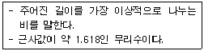
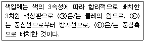
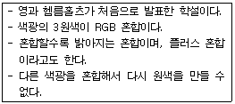
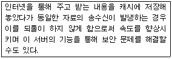
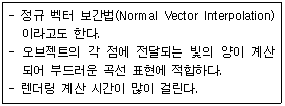
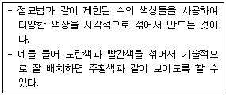
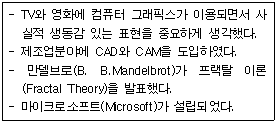
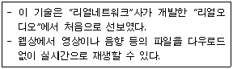

웹디자인기능사 (2013-04-14 기출문제)
1과목: 디자인 일반
1. 굿 디자인(good design)을 위한 디자인의 조건에 포함되지 않는 것은?
- 합목적성
- 독창성
- 심미성
- 모방성
(정답률: 94%)

2. 다음이 설명하고 있는 것은?

- 비례
- 황금비율
- 삼각분할
- 프로포션
(정답률: 95%)
3. 다음 ( )안에 알맞은 용어는?

- (ㄱ) 색상, (ㄴ) 채도, (ㄷ) 명도
- (ㄱ) 색상, (ㄴ) 명도, (ㄷ) 채도
- (ㄱ) 채도, (ㄴ) 명도, (ㄷ) 색상
- (ㄱ) 명도, (ㄴ) 채도, (ㄷ) 색상
(정답률: 64%)
4. 입체파(Cubism)의 가장 대표적인 화가는?
- 피카소
- 쿠르베
- 찰스 자보
- 도미에
(정답률: 91%)
5. 컬러 인쇄를 위해 C, M, Y, K 4색의 네거필름으로 만드는 과정을 무엇이라 하는가?
- 색분해
- 색상좌표
- 색도도
- 색 수정
(정답률: 73%)
6. 데 스틸(De Stijl)에 관한 설명으로 옳지 않은 것은?
- 네덜란드를 중심으로 한 신조형 운동으로 요소주의라고도 불리운다.
- 두스부르크, 몬드리안, 리트벨트 등이 주요인물이다.
- 아르누보의 조형사상에 큰 영향을 주었다.
- 현대의 조형 활동은 인공세계를 상징하고 표현하는데 중점을 두어야 한다고 생각하였다.
(정답률: 59%)
7. 디자인의 요소 중 선에 대한 특성으로 연결이 잘못 된 것은?
- 곡선 - 매력, 우아
- 사선 - 동적, 안정
- 수평선 - 평화, 정지
- 수직선- 희망, 긴장
(정답률: 81%)
8. 적용 매체에 따른 디자인의 분류로 옳지 않은 것은?
- 프로덕트디자인
- 시각디자인
- 기계설계디자인
- 환경디자인
(정답률: 61%)
9. 심미성에 대한 설명으로 맞는 것은?
- 아름다움을 느끼는 미적 의식이며 주관적일 수 있다.
- 모든 사람에게 동일한 형태로 나타난다.
- 합리적이며 객관적인 미적 활동이다.
- 국가, 민족, 관습, 시대와 관계없이 동일하게 나타난다.
(정답률: 86%)
10. 색광의 3원색을 모두 혼합하면 나타나는 색상으로 맞는 것은?
- 검정(Black)
- 노랑(Yellow)
- 흰색(White)
- 자주(Magenta)
(정답률: 79%)
11. 시각적 또는 촉각적으로 느껴지는 물체 표면이 어떤 느낌을 의미하는가?
- 공간
- 점이
- 질감
- 시간
(정답률: 93%)
12. 디자인의 원리에 대한 설명으로 틀린 것은?
- 통일은 조화로운 형, 색, 질감이 공통된 특징을 갖고 있다.
- 대칭은 균형의 전형적인 구성형식이며 좌우대칭, 방사대칭이 있다.
- 반복은 동일한 요소나 대상 등을 두 개 이상 나열시켜 율동감을 표현하는 것으로 시각적으로 힘의 강약효과가 있다.
- 조화는 일정한 방향을 유지하나 크기와 형태가 다른 경우를 의미한다.
(정답률: 77%)
13. 디자인의 표현 요소가 아닌 것은?
- 점, 선, 면
- 방향, 공간
- 형태, 크기
- 흔적, 영역
(정답률: 89%)
14. 과거부터 전해 내려와 습관적으로 사용하는 색 하나하나의 색명을 무엇이라 하는가?
- 일반색명
- 계통색명
- 관용색명
- 특정색명
(정답률: 79%)
15. 디자인의 기본 요소 중 형과 형태에 관한 설명으로 틀린 것은?
- 기본 형태에는 점, 선, 면, 입체가 있다.
- 형태는 일정한 크기, 색채, 질감을 가진다.
- 형에는 현실적 형과 이념적 형이 있다.
- 이념적 형은 그 자체만으로 조형이 될 수 있다.
(정답률: 72%)
16. 서로 반대되는 색을 혼합하여 원래의 색보다 뚜렷해지고 채도가 높아 보이는 현상을 이용한 대비는?
- 보색 대비
- 한난 대비
- 동시 대비
- 색상 대비
(정답률: 86%)
17. 웹에 사용할 이미지에 대한 설명으로 맞는 것은?
- 이미지는 최대한 고해상도의 이미지를 사용한다.
- 이미지의 기본단위는 ㎝ 이다.
- 이미지는 CMYK 모드를 사용한다.
- 주로 JPG, GIF 포맷의 이미지를 사용한다.
(정답률: 76%)
18. 다음이 설명하고 있는 색의 혼합은?

- 감산 혼합
- 가산 혼합
- 병치 혼합
- 중간 혼합
(정답률: 87%)
19. 배색의 조건에 대한 설명으로 틀린 것은?
- 사물의 용도나 기능에 부합되는 배색을 해야 한다.
- 색이 주는 심리적 효과를 고려해야 한다.
- 사용자의 특성 보다는 색채 계획자의 특성에 맞추어 배색 한다.
- 환경적 요인을 충분히 고려하여 배색 한다.
(정답률: 91%)
20. 무성한 초록 나뭇잎들 사이에 핀 빨간 꽃과 관련 있는 조형의 원리는?
- 반복
- 율동
- 점이
- 강조
(정답률: 91%)
2과목: 인터넷 일반
21. 웹페이지에 삽입할 수 있는 이미지 형식이 아닌 것은?
- PNG
- JPG
- PCX
- GIF
(정답률: 88%)
22. 웹에서 하이퍼텍스트 문서 전송을 위한 통신 규약은?
- HTTP
- TELNET
- USENET
- FTP
(정답률: 74%)
23. TCP/IP 프로토콜 중 IP 주소를 물리적인 주소로 변환해 주는 조수변환 프로토콜은?
- ARP(Address Resolution Protocol)
- RARP(Reverse Address Resolution Protocol)
- ICMP (Internet control message protocol)
- IGMP(Internet group management protocol)
(정답률: 67%)
24. 인터넷 익스플로러 7.0에서 사용자에 대한 등급을 제한하여 폭력, 음란 사이트로부터 보호를 목적으로 하기 위해 [도구]→[인터넷 옵션]에서 선택해야 하는 메뉴는?
- 일반
- 보안
- 고급
- 내용
(정답률: 46%)
25. IPv4에서 192.168.128.64 주소는 어느 클래스에 속하는가?
- 클래스 A
- 클래스 B
- 클래스 C
- 클래스 D
(정답률: 52%)
26. 다음 중 인터넷 서비스의 종류와 관련 서버가 옳게 연결된 것은?
- 전자우편(E-mail) 서비스 - Proxy 서버
- 파일전송(FTP) 서비스 - DNS 서버
- 월드와이드웹(WWW) 서비스 - Web 서버
- 텔넷(Telnet) 서비스 - SMTP 서버
(정답률: 79%)
27. 하나의 건물 내 또는 캠퍼스내의 소규모 네트워크 통신망을 의미하는 것은?
- VAN
- WAN
- LAN
- MAN
(정답률: 80%)
28. 다음이 설명하고 있는 서버는?

- DNS 서버
- Gateway 서버
- HTTP 서버
- Proxy 서버
(정답률: 72%)
29. 검색엔진을 이용한 정보검색의 설명으로 틀린 것은?
- 한 단어의 검색 보다는 OR 연산자를 이용한 구체적인 검색으로 검색내용을 최대화하는 것이 효율적이다.
- 고유명사는 그 단어 자체를 국한하여 검색하기 때문에 좋은 키워드가 될 수 있다.
- 검색 결과에 대한 신뢰도는 절대적인 것은 아니다.
- 웹에서 찾기 어려운 자료는 메일링 리스트나 뉴스그룹(UseNet) 등을 검색하는 것도 좋은 방법이다.
(정답률: 59%)
30. 다음 중 데이터 전송 속도를 나타내는 단위로 틀린 것은?
- bps
- dpi
- baud
- cps
(정답률: 57%)
31. 도메인 네임은 컴퓨터가 속한 기관이나 국가에 따라서 계층적으로 구성되어 있다. 이러한 인터넷 주소 형식에서 마지막 부분은 항상 최상위 도메인을 나타낸다. 다음 중 최상위 도메인이 아닌 것은?
- ac
- com
- gov
- kr
(정답률: 56%)
32. 기존의 단어중심 검색방법과는 달리 문장 단위로 검색함으로써 좀 더 정확도를 높이는 검색방법은?
- 키워드 검색
- 자연어 검색
- 이미지 검색
- 색인 검색
(정답률: 58%)
33. 자바스크립트의 내장함수 중 문자열로 입력된 수식을 계산하여 주는 함수는?
- String
- parselnt
- confirm
- eval
(정답률: 45%)
34. 분신, 화신이라는 의미로 채팅, 온라인 게임 등 네트워크 환경에서 자신을 대신하여 커뮤니케이션에 참여하는 가상의 그림 또는 아이콘을 뜻하는 인터넷 용어는?
- 아바타
- 쿠키
- 포털
- 허브
(정답률: 91%)
35. 다음 중 웹 브라우저의 기능이 아닌 것은?
- 웹 페이지 열기 및 저장
- 자주 방문하는 URL의 기억 및 관리
- 소스파일(HTML) 보기
- 실시간 동영상 캡처 및 전송
(정답률: 86%)
36. HTML의 특징으로 틀린 것은?
- HTML은 Markup 언어이다.
- HTML 문서는 ASCII 코드로 구성된 일반적인 텍스트 파일이다.
- HTML 문서는 사용자가 정의한 태그(tag)를 이용해 작성될 수 있다.
- HTML은 컴퓨터 시스템이나 운영체제에 독립적이다.
(정답률: 39%)
37. OSI 7계층 구조를 하위 계층부터 상위 계층까지 순서대로 나열한 것은?
- 물리계층 → 데이터링크계층 → 세션계층 → 네트워크계층 → 전송계층 → 응용계층 → 표현계층
- 물리계층 → 데이터링크계층 → 네트워크계층 → 전송계층 → 세션계층 → 응용계층 → 표현계층
- 물리계층 → 데이터링크계층 → 네트워크계층 → 전송계층 → 세션계층 → 표현계층 → 응용계층
- 전송계층 → 물리계층 → 데이터링크계층 → 네트워크계층 → 세션계층 → 표현계층 → 응용계층
(정답률: 75%)
38. Java script의 설명으로 틀린 것은?
- 소스코드가 HTML 문서 내에 포한된다.
- 변수 타입 선언 없이 사용이 가능하다.
- 반드시 플랫폼에 종속적으로 사용된다.
- 객체지향적인 스크립트 언어이다.
(정답률: 65%)
39. 다음 자바 스크립트의 연산자 중 우선순위가 가장 높은 것은?
- []
- ++
- %
- !
(정답률: 71%)
40. 검색엔진에 대한 설명으로 틀린 것은?
- 검색엔진은 자체에 등록된 사이트만을 대상으로 정보를 검색한다.
- 검색엔진 종류에는 주제별 검색엔진, 일반 키워드형 검색엔진 및 메타 검색엔진 등이 있다.
- 일반 키워드형 검색엔진은 주제어 또는 검색어를 입력하여 원하는 정보를 찾는다.
- 주제별 검색엔진은 계층적인 메뉴를 따라가며 검색할 수 있다.
(정답률: 79%)
3과목: 웹그래픽스 디자인
41. 전통적인 셀 애니메이션의 특수한 기법으로 실제 장면을 촬영한 실사 필름 위에 특정 인물이나 사물을 투명 종이(셀)에 직접 그림을 그리고 채색하는 컴퓨터 애니메이션 기법은?
- 로토스코핑(Rotoscoping)
- 컬러 사이클링(Color cycling)
- 모핑(Morphing)
- 모션 트위닝(Motion Tweening)
(정답률: 61%)
42. 웹 사이트 제작에서 경쟁사의 웹 사이트를 분석하는 이유로 틀린 것은?
- 해당 분야의 인터넷 시장을 파악 한다.
- 경쟁 사이트들을 분석하여 자신의 사이트 경쟁력을 제고 한다.
- 인터넷 시장의 흐름을 이해한다.
- 웹 사이트 제작에 필요한 콘텐츠를 얻는다.
(정답률: 77%)
43. 일반적으로 웹디자이너가 홈페이지에 적용할 색을 설계할 때 고려해야 할 사항으로 거리가 먼 것은?
- 상식적인 수준을 따르는 것이 좋다.
- 보색 사용은 자제한다.
- 배경색과 배경무늬는 심플한 것이 좋다.
- 일관성 보다 다양한 색상을 고려하여 적용한다.
(정답률: 78%)
44. 벡터(Vector) 방식에 대한 설명으로 틀린 것은?
- 선과 도형으로 그린 이미지를 저장하는 방식이다.
- 단순한 도형의 표현에 적합하다.
- 이미지를 확대하거나 축소해도 손상이 없다.
- 벡터기반 프로그램으로는 photoshop이 있다.
(정답률: 77%)
45. 페이지 수가 많고, 담고 있는 정보가 복잡한 웹페이지 일수록 그 구성과 형태를 얼마나 잘 체계화하고, 적절한 장소에 위치시키느냐에 따라 쉬운 정보검색을 할 수 있다. 이를 가능하게 하는 디자인 작업은?
- 스토리보드
- 시나리오
- 내비게이션 디자인
- 스토리텔링
(정답률: 67%)
46. 다음 설명에 해당하는 음영 처리 기법은?

- 플랫 쉐이딩(Flat Shading)
- 퐁 쉐이딩(Phone Shading)
- 메탈 쉐이딩(Metal Shading)
- 고러드 쉐이딩(Gouraud Shading)
(정답률: 49%)
47. 플래시에서 맨 앞과 맨 끝 키 프레임에만 변화를 주면 중간 과정을 만들어 주는 것을 무엇이라고 하는가?
- Motion
- Tweening
- Transform
- Swapping
(정답률: 74%)
48. 웹디자인 프로세스에 관한 내용으로 틀린 것은?
- 디자인 스타일링이란 컨셉(concept)에 맞추어 아이디어를 수집, 발전, 결정하는 것을 말한다.
- 디자인 발의란 어떤 사이트를 어떻게 만들 것인가에 대한 의견제시 과정이다.
- 디자인 개발단계에서는 인력을 적재적소에 분배한다.
- 디자인 조사 및 분석 단계에서는 컬러시스템, 그리드시스템, 레이아웃 등을 계획한다.
(정답률: 55%)
49. 사용자가 모니터 위에 표시된 메뉴를 손가락으로 누르면 입력이 되어 컴퓨터에 익숙하지 않은 초보자들도 간단하고 편리하게 사용할 수 있는 입력장치는?
- 스캐너
- 디지타이저
- 터치스크린
- 마우스
(정답률: 81%)
50. 다음이 설명하고 있는 것은?

- Halftone
- Gradation
- Pattern
- Dithering
(정답률: 72%)
51. 웹사이트에 움직이는 배너광고를 삽입하고자 할 경우 사용 가능한 툴(tool)로 틀린 것은?
- 플래시(Flash)
- 이미지 레디(Image Ready)
- 일러스트레이터(Illustrator)
- 스위시(Swish)
(정답률: 67%)
52. 다음 설명은 컴퓨터 그래픽스의 역사 중 몇 세대를 의미하는가?

- 제2세대
- 제3세대
- 제4세대
- 제5세대
(정답률: 54%)
53. 다음 중 웹 그래픽 제작 툴과 가장 거리가 먼 것은?
- 포토샵(Photoshop)
- 일러스트레이터(Illustrator)
- 오토캐드(Autocad)
- 페인트샵(Paintshop)
(정답률: 75%)
54. 다음이 설명하고 있는 것은?

- Gif 애니메이션
- 퀵타임(Quick-time)
- 스트리밍(Streaming)
- Flash 애니메이션
(정답률: 80%)
55. 플래시(Flash)를 이용한 작업으로 거리가 먼 것은?
- 단순하고 정적인 홈페이지를 탈피하여 역동적인 홈페이지를 구축할 수 있다.
- 사업적 용도로 가치 있는 배너를 제작할 수 있다.
- CGI와 연동하면 여러 가지 기능을 가진 카운터, 방명록, 게시판 등을 만들 수 있다.
- 3D 애니메이션을 제작하여 영화산업에서도 많이 응용되고 있다.
(정답률: 55%)
56. 웹에서 사용되는 타이포그래피의 특징에 대한 설명으로 틀린 것은?
- 타이포그래피는 문자의 모양과 배열을 의미하는 것으로 웹과 접목되면 다양한 표현이 가능해진다.
- 웹에서는 서체 사용에 제한이 없다.
- 웹의 타이포그래피를 이용한 인터랙티브한 구성이 가능해 진다.
- 웹의 타이포그래피는 동적이다.
(정답률: 67%)
57. 웹디자인 프로세스 중 Pre-Production 단계에 해당되지 않는 것은?
- 디자인 계획 수립
- 콘텐츠 제작
- 콘셉트 구상
- 디자인 구체화
(정답률: 55%)
58. 애니메이션에 대한 설명으로 가장 옳은 것은?
- 그림자나 색체의 변화와 같은 3차원적인 질감을 더하여 현실감을 추가하는 과정이다.
- 움직임이 없는 무생물이나 상상의 물체에 인위적인 조작을 가해 움직임을 주는 기술이다.
- 실제 존재하였거나 상상했던 오브젝트를 3차원적 좌표계를 사용하여 표현하는 과정이다.
- 두 가지의 다른 화면을 합성하기 위한 그래픽 기술이다.
(정답률: 72%)
59. 그래픽 파일 포맷인 GIF와 JPG에 대한 설명으로 틀린 것은?
- GIF 파일은 빠른 전송 때문에 웹용 이미지로 많이 사용한다.
- JPG 파일 형식은 GIF 형식보다 다양한 색상을 나타낼 수 있다.
- JPG 파일 형식은 프로그레시브 방식을 지원한다.
- GIF 파일 형식은 24bit 트루 컬러(True Color)색상으로 표현할 수 있다.
(정답률: 56%)
60. GUI에 대한 설명으로 틀린 것은?
- GUI는 Graphic User Interface의 약자이다.
- 그래픽 사용자 중심의 환경으로 아이콘, 내비게이션 툴바 등으로 컴퓨터 사용을 손쉽게 해준다.
- 제 5세대인 1990년도 이후부터 본격적으로 출발하였다.
- 현재 Windows 계열의 OS 만이 사용하고 있다.
(정답률: 77%)